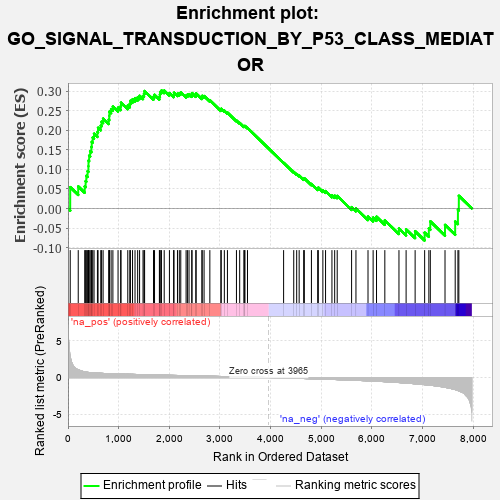

| | | Dataset | 7d |
| Phenotype | NoPhenotypeAvailable |
| Upregulated in class | na_pos |
| GeneSet | GO_SIGNAL_TRANSDUCTION_BY_P53_CLASS_MEDIATOR |
| Enrichment Score (ES) | 0.3020597 |
| Normalized Enrichment Score (NES) | 1.2263608 |
| Nominal p-value | 0.114503816 |
| FDR q-value | 0.46482092 |
| FWER p-Value | 1.0 |
Table: GSEA Results Summary

Fig 1: Enrichment plot: GO_SIGNAL_TRANSDUCTION_BY_P53_CLASS_MEDIATOR
Profile of the Running ES Score & Positions of GeneSet Members on the Rank Ordered List
| PROBE | GENE SYMBOL | GENE_TITLE | RANK IN GENE LIST | RANK METRIC SCORE | RUNNING ES | CORE ENRICHMENT | | 1 | PCBP4 | | | 44 | 2.875 | 0.0546 | Yes |
| 2 | BCL3 | | | 202 | 1.047 | 0.0565 | Yes |
| 3 | BOP1 | | | 330 | 0.768 | 0.0565 | Yes |
| 4 | CNOT7 | | | 348 | 0.750 | 0.0700 | Yes |
| 5 | HUS1 | | | 362 | 0.735 | 0.0837 | Yes |
| 6 | BAX | | | 387 | 0.711 | 0.0955 | Yes |
| 7 | RRP8 | | | 403 | 0.699 | 0.1082 | Yes |
| 8 | NBN | | | 405 | 0.696 | 0.1227 | Yes |
| 9 | RAD9A | | | 418 | 0.681 | 0.1354 | Yes |
| 10 | RRN3 | | | 438 | 0.667 | 0.1470 | Yes |
| 11 | CNOT6 | | | 462 | 0.655 | 0.1577 | Yes |
| 12 | WRN | | | 469 | 0.649 | 0.1706 | Yes |
| 13 | RFC2 | | | 488 | 0.635 | 0.1816 | Yes |
| 14 | CNOT2 | | | 514 | 0.625 | 0.1915 | Yes |
| 15 | CCNB1 | | | 581 | 0.601 | 0.1956 | Yes |
| 16 | RBL2 | | | 593 | 0.596 | 0.2067 | Yes |
| 17 | NOC2L | | | 647 | 0.578 | 0.2121 | Yes |
| 18 | RFC3 | | | 663 | 0.571 | 0.2221 | Yes |
| 19 | MRE11 | | | 693 | 0.560 | 0.2302 | Yes |
| 20 | BLM | | | 804 | 0.531 | 0.2273 | Yes |
| 21 | RFC4 | | | 815 | 0.528 | 0.2371 | Yes |
| 22 | RPA1 | | | 817 | 0.527 | 0.2480 | Yes |
| 23 | RPA2 | | | 851 | 0.519 | 0.2546 | Yes |
| 24 | RMI1 | | | 886 | 0.509 | 0.2610 | Yes |
| 25 | TAF3 | | | 988 | 0.486 | 0.2583 | Yes |
| 26 | AKT1 | | | 1040 | 0.476 | 0.2618 | Yes |
| 27 | TAF9 | | | 1046 | 0.475 | 0.2711 | Yes |
| 28 | TFDP1 | | | 1180 | 0.450 | 0.2636 | Yes |
| 29 | RBBP7 | | | 1220 | 0.443 | 0.2679 | Yes |
| 30 | CHD3 | | | 1232 | 0.442 | 0.2758 | Yes |
| 31 | CNOT3 | | | 1274 | 0.435 | 0.2797 | Yes |
| 32 | SSRP1 | | | 1323 | 0.424 | 0.2824 | Yes |
| 33 | TAF2 | | | 1375 | 0.415 | 0.2846 | Yes |
| 34 | CARM1 | | | 1413 | 0.408 | 0.2885 | Yes |
| 35 | TAF15 | | | 1481 | 0.393 | 0.2882 | Yes |
| 36 | E2F4 | | | 1501 | 0.390 | 0.2939 | Yes |
| 37 | TAF6 | | | 1512 | 0.389 | 0.3008 | Yes |
| 38 | WWOX | | | 1688 | 0.359 | 0.2861 | Yes |
| 39 | TPX2 | | | 1708 | 0.355 | 0.2911 | Yes |
| 40 | RAD17 | | | 1804 | 0.336 | 0.2860 | Yes |
| 41 | RPF2 | | | 1814 | 0.335 | 0.2919 | Yes |
| 42 | MSH2 | | | 1819 | 0.334 | 0.2984 | Yes |
| 43 | CHD4 | | | 1845 | 0.329 | 0.3021 | Yes |
| 44 | TAF4 | | | 1899 | 0.321 | 0.3020 | No |
| 45 | EXO1 | | | 2002 | 0.304 | 0.2954 | No |
| 46 | BRPF1 | | | 2085 | 0.293 | 0.2911 | No |
| 47 | TAF7 | | | 2092 | 0.292 | 0.2965 | No |
| 48 | CNOT4 | | | 2161 | 0.283 | 0.2938 | No |
| 49 | ATAD5 | | | 2197 | 0.277 | 0.2951 | No |
| 50 | CDK2 | | | 2226 | 0.272 | 0.2972 | No |
| 51 | TOP3A | | | 2331 | 0.256 | 0.2894 | No |
| 52 | MIF | | | 2357 | 0.252 | 0.2915 | No |
| 53 | HIPK2 | | | 2389 | 0.247 | 0.2927 | No |
| 54 | KAT6A | | | 2444 | 0.237 | 0.2908 | No |
| 55 | KDM1A | | | 2447 | 0.237 | 0.2955 | No |
| 56 | MBD3 | | | 2524 | 0.223 | 0.2905 | No |
| 57 | RAD1 | | | 2528 | 0.223 | 0.2948 | No |
| 58 | KAT5 | | | 2644 | 0.206 | 0.2845 | No |
| 59 | NOP2 | | | 2648 | 0.206 | 0.2884 | No |
| 60 | TAF12 | | | 2686 | 0.201 | 0.2879 | No |
| 61 | ATR | | | 2800 | 0.183 | 0.2774 | No |
| 62 | BRD7 | | | 3018 | 0.147 | 0.2529 | No |
| 63 | BRCA2 | | | 3024 | 0.146 | 0.2553 | No |
| 64 | HDAC1 | | | 3086 | 0.138 | 0.2505 | No |
| 65 | TAF11 | | | 3147 | 0.130 | 0.2456 | No |
| 66 | TAF13 | | | 3325 | 0.100 | 0.2252 | No |
| 67 | RFC5 | | | 3389 | 0.091 | 0.2191 | No |
| 68 | CNOT1 | | | 3473 | 0.081 | 0.2102 | No |
| 69 | CDK5 | | | 3480 | 0.080 | 0.2111 | No |
| 70 | TBP | | | 3493 | 0.078 | 0.2112 | No |
| 71 | PIN1 | | | 3543 | 0.069 | 0.2065 | No |
| 72 | RRS1 | | | 4256 | -0.051 | 0.1171 | No |
| 73 | NDRG1 | | | 4456 | -0.085 | 0.0936 | No |
| 74 | SNW1 | | | 4514 | -0.096 | 0.0883 | No |
| 75 | BAG6 | | | 4563 | -0.108 | 0.0845 | No |
| 76 | TAF10 | | | 4652 | -0.128 | 0.0760 | No |
| 77 | TTC5 | | | 4665 | -0.131 | 0.0772 | No |
| 78 | PPM1D | | | 4805 | -0.158 | 0.0629 | No |
| 79 | ATRX | | | 4929 | -0.184 | 0.0511 | No |
| 80 | EP300 | | | 4941 | -0.186 | 0.0536 | No |
| 81 | TAF5 | | | 5031 | -0.204 | 0.0466 | No |
| 82 | ING4 | | | 5084 | -0.221 | 0.0446 | No |
| 83 | ATM | | | 5210 | -0.249 | 0.0339 | No |
| 84 | CDK1 | | | 5264 | -0.262 | 0.0327 | No |
| 85 | RAD50 | | | 5314 | -0.276 | 0.0322 | No |
| 86 | SMYD2 | | | 5598 | -0.344 | 0.0035 | No |
| 87 | CDIP1 | | | 5684 | -0.370 | 0.0004 | No |
| 88 | STK11 | | | 5922 | -0.443 | -0.0205 | No |
| 89 | JMY | | | 6023 | -0.479 | -0.0231 | No |
| 90 | UBB | | | 6090 | -0.503 | -0.0210 | No |
| 91 | TFAP4 | | | 6254 | -0.556 | -0.0301 | No |
| 92 | DYRK2 | | | 6533 | -0.677 | -0.0512 | No |
| 93 | RFFL | | | 6674 | -0.749 | -0.0533 | No |
| 94 | AEN | | | 6852 | -0.842 | -0.0582 | No |
| 95 | RNF34 | | | 7040 | -0.963 | -0.0618 | No |
| 96 | RBBP4 | | | 7123 | -1.010 | -0.0511 | No |
| 97 | DDX5 | | | 7152 | -1.037 | -0.0330 | No |
| 98 | CASP2 | | | 7442 | -1.322 | -0.0420 | No |
| 99 | TAF1 | | | 7643 | -1.633 | -0.0332 | No |
| 100 | MYO6 | | | 7697 | -1.753 | -0.0033 | No |
| 101 | BOK | | | 7715 | -1.817 | 0.0325 | No |
Table: GSEA details [plain text format]
Fig 2: GO_SIGNAL_TRANSDUCTION_BY_P53_CLASS_MEDIATOR: Random ES distribution
Gene set null distribution of ES for GO_SIGNAL_TRANSDUCTION_BY_P53_CLASS_MEDIATOR